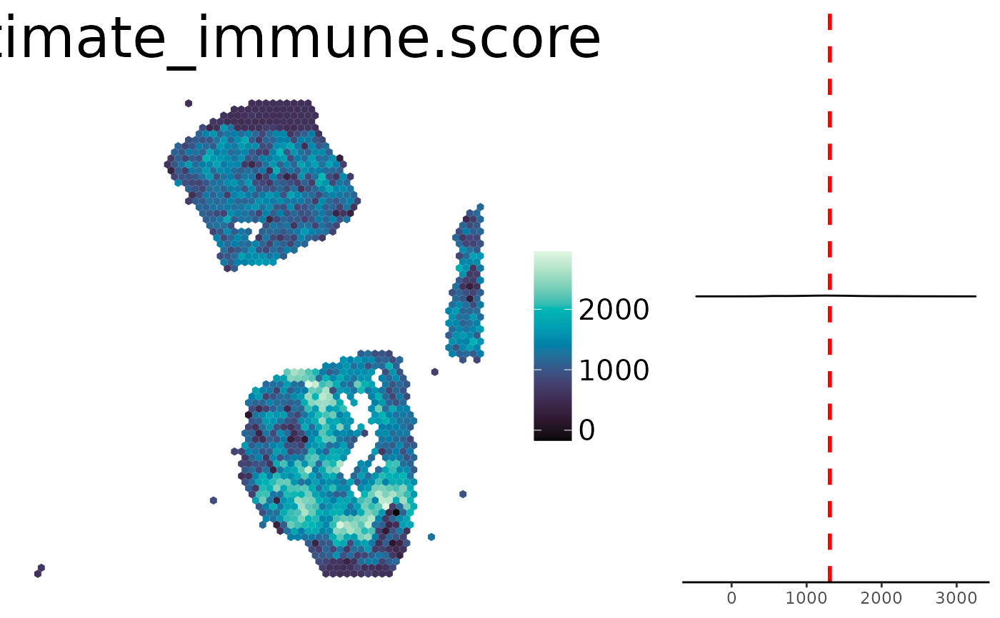

Function to plot deconvolution results
plot_celltype.RdGenerate Hex Plot of a SpatialExperiment containing deconvolution results
Usage
plot_celltype(
spe,
cell_type = NULL,
palette = "Mako",
transform_scale = NULL,
sample_id = "sample01",
image_id = "lowres",
reverse_palette = FALSE,
show_image = FALSE,
background = NULL,
palette_type = "sequential",
offset_rotation = FALSE,
spot_size = 1,
limits = NULL,
smooth = FALSE,
smoothing_factor = 1.5,
title_size = 30,
title = NULL,
font_size = 15,
legend_size = 20,
density = TRUE,
save = FALSE,
path = NULL,
png_width = 1500,
png_height = 750
)Arguments
- spe
deconvolution result in Form of a SpatialExperiment
- cell_type
one or more celltype to plot
- palette
colorspace palette (sequential)
- transform_scale
data transform_scaleation to use, "log"
- sample_id
sample id to plot, default: "sample01"
- image_id
which image to plot, default: "lowres"
- reverse_palette
reverse color palette
- show_image
logical, whether to display the image, default = TRUE
- background
background color
- palette_type
discrete, sequential or diverging
- offset_rotation
correct hex orientation for rotated visium image
- spot_size
increase (>1) or decrease (<1) the hex size
- limits
vector of color scale limits
- smooth
whether to smooth the plot
- smoothing_factor
kernel size factor (multiples of spot distance)
- title_size
font size of title
- title
set a custom title
- font_size
font size of legend
- legend_size
legend size in points
- density
whether to display a density distribution next to the spatial plot
- save
set TRUE to save plot
- path
specify directory to save plot, if NULL: saving at ~/spacedeconv
- png_width
when saving, png width in px
- png_height
when saving, png height in px
Examples
data("spatial_data_2")
deconv <- spacedeconv::deconvolute(spatial_data_2, method = "estimate")
#> ── spacedeconv ─────────────────────────────────────────────────────────────────
#> ℹ testing parameter
#> ✔ parameter OK [42ms]
#>
#>
#>
#> ── Spatial
#> Assays: "counts"
#> Genes: 36591
#> → without expression: 13411 (36.65%)
#> Spots: 1310
#> Spots under tissue: 1310 (100%)
#> Median Genes Per Spot: 4613.5
#> → without expression: 15 (1.15%)
#> Umi count range: 0 - 64683
#> Spots with UMI count below 500: 85 (0.23%)
#> ✔ Rownames set
#> ✔ Colnames set
#> ℹ deconvoluting
#>
#> >>> Running estimate
#> [1] "Merged dataset includes 9969 genes (443 mismatched)."
#> [1] "1 gene set: StromalSignature overlap= 136"
#> [1] "2 gene set: ImmuneSignature overlap= 140"
#> ✔ finished [12.3s]
#>
spacedeconv::plot_celltype(deconv, cell_type = "estimate_immune.score")
